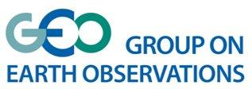
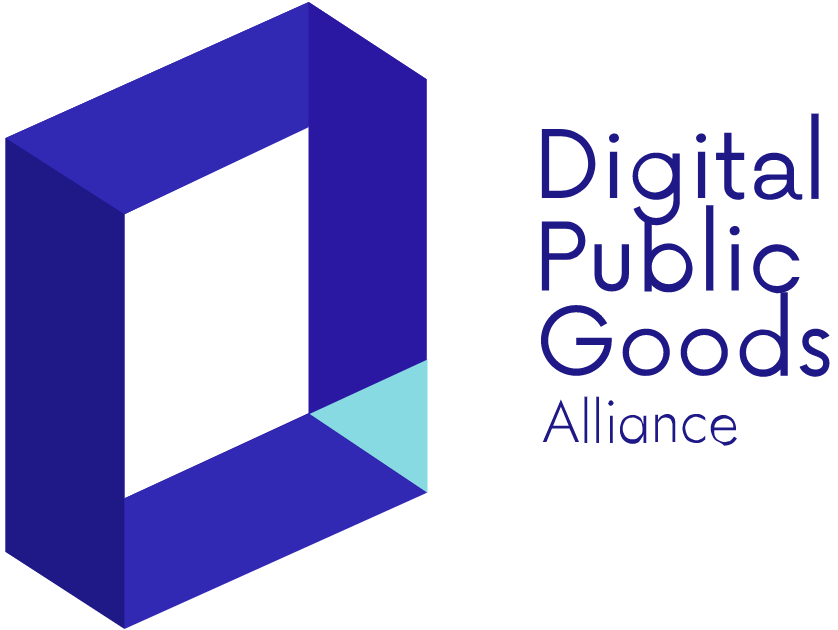

	<nav class="quattrocento">
		<div class="w3-sidebar ambient w3-col l2 w3-bar-block w3-hide-medium w3-hide-small">
			<a href="../" onclick="toggleClose('navBar');"><div class="hover-ambient w3-bar-item"><i class="fas fa-home" style="margin-right: 10px;"></i>Home</div></a>
			<a href="./?page=technical" onclick="toggleClose('navBar');"><div class="hover-ambient w3-bar-item"><i class="fas fa-chart-bar" style="margin-right: 10px;"></i>About</div></a>
			<a href="./?page=technical#contact"onclick="toggleClose('navBar');"><div class="hover-ambient w3-bar-item"><i class="fas fa-envelope" style="margin-right: 10px;"></i>Contact Us</div></a>
			<a href="../privacy#terms" onclick="toggleClose('navBar');"><div class="hover-ambient w3-bar-item"><i class="fas fa-user-check" style="margin-right: 10px;"></i>Terms of Use</div></a>
			<a href="../privacy" onclick="toggleClose('navBar');"><div class="hover-ambient w3-bar-item"><i class="fas fa-user-lock" style="margin-right: 10px;"></i>Privacy Policy</div></a>
			<hr />
			<div class="w3-bar-item">2019 Global Winner: <br/>
				<a href="https://2019.spaceappschallenge.org/challenges/living-our-world/smash-your-sdgs/teams/aedes-project/project" target="_blank"></a><br/>
				<p class="w3-center">Best Use Of Data</p>
			</div>
			<div class="w3-bar-item">2020 EO4SDG Awardee: <br/>
				<a href="https://www.earthobservations.org/geo_blog_obs.php?id=472"  target="_blank"></a><br/>
				<p class="w3-center">GEO4SDG award</p>
			</div>			
			<div class="w3-bar-item">Digital Public Good: <br/>
				<a href="https://digitalpublicgoods.net/blog/unicef-philippines-announces-its-first-digital-public-good-pathfinding-pilot/" target="_blank"></a><br/>
				<p class="w3-center">DPGA</p>
			</div>	
			<div class="w3-bar-item">
				<script type="text/javascript"> //<![CDATA[
				  var tlJsHost = ((window.location.protocol == "https:") ? "https://secure.trust-provider.com/" : "http://www.trustlogo.com/");
				  document.write(unescape("%3Cscript src='" + tlJsHost + "trustlogo/javascript/trustlogo.js' type='text/javascript'%3E%3C/script%3E"));
				//]]></script>
				<script language="JavaScript" type="text/javascript">
				  TrustLogo("https://www.positivessl.com/images/seals/positivessl_trust_seal_md_167x42.png", "POSDV", "none");
				</script>
			</div>
		</div>

		<div id="navBar" class="w3-sidebar ambient w3-animate-left w3-bar-block w3-hide w3-large">
			<a href="../" onclick="toggleClose('navBar');"><div class="hover-ambient w3-bar-item"><i class="fas fa-home" style="margin-right: 10px;"></i>Home</div></a>
			<a href="./?page=technical" onclick="toggleClose('navBar');"><div class="hover-ambient w3-bar-item"><i class="fas fa-chart-bar" style="margin-right: 10px;"></i>About</div></a>
			<a href="./?page=technical#contact"onclick="toggleClose('navBar');"><div class="hover-ambient w3-bar-item"><i class="fas fa-envelope" style="margin-right: 10px;"></i>Contact Us</div></a>
			<a href="../privacy#terms" onclick="toggleClose('navBar');"><div class="hover-ambient w3-bar-item"><i class="fas fa-user-check" style="margin-right: 10px;"></i>Terms of Use</div></a>
			<a href="../privacy" onclick="toggleClose('navBar');"><div class="hover-ambient w3-bar-item"><i class="fas fa-user-lock" style="margin-right: 10px;"></i>Privacy Policy</div></a>
			<hr />
			<div class="w3-bar-item">2019 Global Winner: <br/>
				<a href="https://2019.spaceappschallenge.org/challenges/living-our-world/smash-your-sdgs/teams/aedes-project/project" target="_blank"></a><br/>
				<p class="w3-center">Best Use Of Data</p>
			</div>
			<div class="w3-bar-item">2020 EO4SDG Awardee: <br/>
				<a href="https://www.earthobservations.org/geo_blog_obs.php?id=472"  target="_blank"></a><br/>
				<p class="w3-center">GEO4SDG award</p>
			</div>	
			<div class="w3-bar-item">Digital Public Good:<br/>
				<a href="https://digitalpublicgoods.net/blog/unicef-philippines-announces-its-first-digital-public-good-pathfinding-pilot/"  target="_blank"></a><br/>
				<p class="w3-center">DPGA</p>
			</div>				
		</div>
	</nav>
	<div class="w3-row">
		<div class="w3-col l2 w3-hide-medium w3-hide-small">&nbsp;</div>
		<div class="w3-col l10 w3-grey">